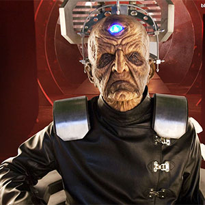

|
|||||||
|
DavrosPortrayed by Terry Molloy Davros was originally the head of the Kaled Scientific Elite, on the planet Skaro, but became better known as the creator of the Daleks. During the Imperial-Renegade Dalek Civil War, he served as Emperor of the Imperial Dalek faction and later of the Dalek race as a whole, but his relationship with his creations was always tense. He was frequently hunted, maligned or otherwise denigrated by some portion of the overall Dalek population. Despite the fact that he was not the unquestioned ruler of the Daleks, he was one of the Doctor's greatest enemies, rivalling the Master in intellect and madness. Because of his creations, he was responsible for trillions of deaths and war across the universe. Davros had a sound mind early in his life, but the incident that crippled him and his overall experiences in the Thal-Kaled war left him a depraved and insane megalomaniac. He became tyrannical and ruthless, tolerating no opposition to his will and dismissing fairness and democracy as "the creeds of cowards". |
||||||